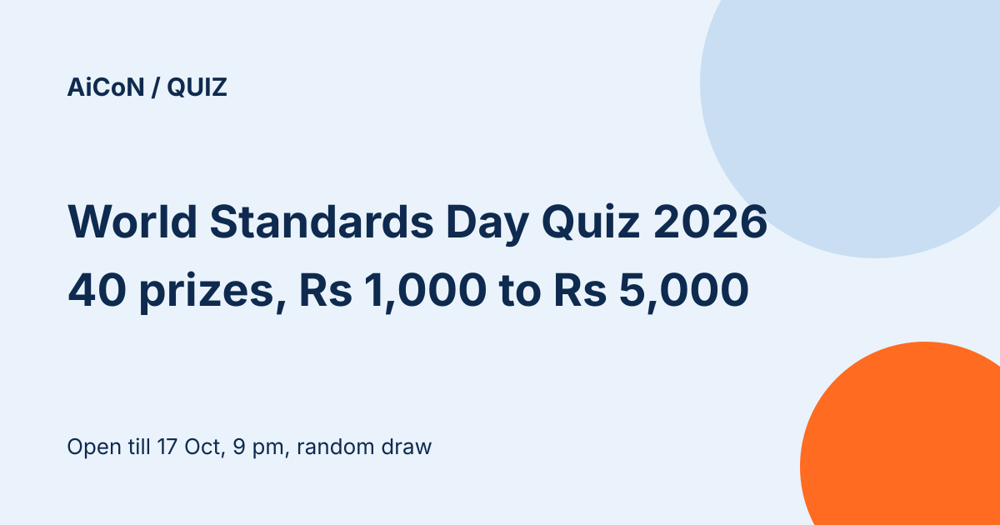

World Standards Day Quiz 2026: 40 cash prizes from ₹1,000 to ₹5,000, random draw
The Bureau of Indian Standards (BIS) and MyGov are running a national consumer quiz for World Standards Day 2026. It has 15 multiple-choice questions in 300 seconds, open to all citizens of India, from 10 October 2026, 9:00 am to 17 October 2026, 9:00 pm. There are 40 cash prizes, from ₹1,000 to ₹5,000, and every participant gets an e-certificate.

Official MyGov media

Prizes
- First prize: ₹5,000 each to 10 winners
- Second prize: ₹4,000 each to 10 winners
- Third prize: ₹3,000 each to 10 winners
- Consolation prize: ₹1,000 each to 10 winners
- All participants: e-Certificate of Participation
Quiz rules
- 15 multiple-choice questions, one correct answer each, and 300 seconds in total
- No negative marking
- The quiz starts as soon as you click "Play Quiz" and ends automatically when time runs out
- English and Hindi
- One attempt per person. Multiple attempts lead to disqualification
- Employees of BIS and MyGov, and their immediate family, cannot take part
What is it about?
General questions on BIS and on the "Standards Watch" publication, including questions on the Sustainable Development Goals. Previous editions of Standards Watch are on the BIS website.
How winners are chosen
Under the terms, everyone with the highest score who finishes within the time limit goes into a central pool. Winners are then selected only by the automated randomisation process. A faster or earlier entry does not rank higher, as far as the terms say.
If you win
Selected winners must submit valid proof of identity, address and bank details within the prescribed time. Missing it can lead to disqualification. The organisers' decision is final.
A careful checklist
- Open the quiz only from quiz.mygov.in.
- Read the Standards Watch issue first, then start when you are ready, because the 300 seconds begin when you click Play Quiz.
- Enter accurate personal details.
- Do not share an OTP or pay a caller who claims to handle your prize. Use only the official portal and organiser instructions.
What changed since this post?
Official quiz page and all terms rechecked on 13 October 2026. Dates, prize amounts, automated random draw from highest scorers, 15 questions and 300 seconds match. The logged-out page still says "Closed" despite those dates; signed-in access is not confirmed. No account login or quiz attempt performed.
Source: World Standards Day Quiz 2026 on MyGov, terms and conditions read in full on 13 October 2026. This is an AiCoN explainer, not a government publication.